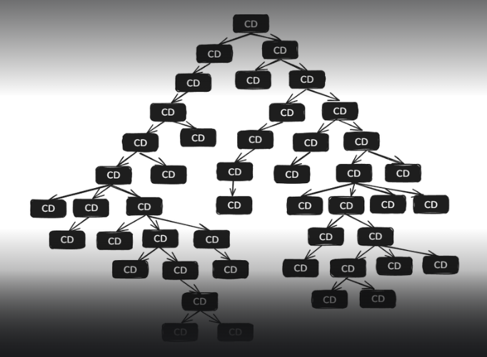

Change Detection Strategy
in Angular
Tatsiana Hatskaya
What is it?
In Angular, the Change Detection Strategy is the way the framework decides if it needs to update the user interface when data changes.
Why is it needed?
When we change variables in a component, Angular needs to know if it should update the HTML. For example, if the user's name changes:

What strategies exist?

What is ChangeDetectionStrategy.Default?
Default strategy:
"Check everything, all the time!
If anything sneezes — update the HTML!"
How it works:
- Angular builds a tree of components.
- When something changes, it checks the whole tree.
What can trigger a check?
- User actions
- Variable change
- HTTP requests
- Timers, Promises, async events
Performance issues with Default
In large apps, checking everything can slow down performance.

What is ChangeDetectionStrategy.OnPush?
OnPush: Checks components only when needed.
When will Angular update a component with OnPush?
- When the input properties (@Input) change.
- When an event inside the component happens (for example, a mouse click).
- When you manually trigger a check using ChangeDetectorRef.detectChanges().
Important Note
Asynchronous operations (like setTimeout, Promise, or HTTP requests) do not automatically trigger updates for a component with OnPush. This means that when working with async data, you need to manually "trigger" Angular to check for changes or properly update the input data.
Conclusion
ChangeDetectionStrategy.OnPush is a way to tell Angular: "Don't check me without a reason. I'll tell you when I need to be updated."
Default: Pros and Cons
| Pros | Cons |
|---|---|
| Easy to use: no need to configure anything. | Low performance in large applications. |
| Good for small projects or few components. | Entire component tree is checked even for local changes. |
| No risk of forgetting manual updates. | Can cause unnecessary calls and re-renders. |
OnPush: Pros and Cons
| Pros | Cons |
|---|---|
| Excellent performance optimization. | You must carefully manage how you pass data. |
| Component updates only when truly necessary, avoiding extra re-renders. | Requires more discipline (you can't just mutate objects — you must create new ones). |
| You have full control and explicitly manage updates. | If used incorrectly, data may not update, and you might not notice immediately. |
When to use Default:
- You frequently mutate objects.
- There is a lot of logic in templates.
- The project is small.
- Automatic updates are required.
When to use OnPush:
- You work with immutable data.
- High performance is required.
- Components are simple and presentational.
- You use RxJS and the async pipe.
Summary: Default vs OnPush
| Feature | Default | OnPush |
|---|---|---|
| When Angular checks | After any change | Only after @Input or events |
| Automatic updates | Yes | No |
| Performance | Less efficient | More efficient |